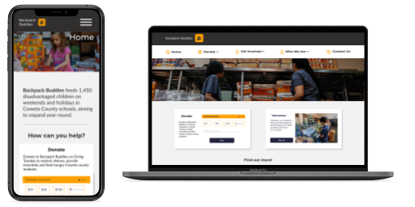

Backpack Buddies
A great organization that helps children get meals on the weekends.
Meet Sydney
Sydney is a 34 year old Marketing Manager, who's passionate about community service, especially ensuring children have access to enough food to grow up healthy.
Problem
Small, nonprofit organizations do not usually have time or skill sets to develop clear websites to promote their mission and gain volunteers and donations.
Solution
A simple redesign will help to make the website more understandable with clearer verbiage and better placement of buttons.
Tools Used
Trello, Zoom, Figma, Miro, and G-Suite for this project.
My Role
My role was as a ux/ui designer. I played a large part in developing our color palette, typography, and branding. I designed the sketches of our nav header and footer and wireframed them in Figma. I made contributions to the prototype. I also did academic research into accessibility for ui design and presented my results to my team.